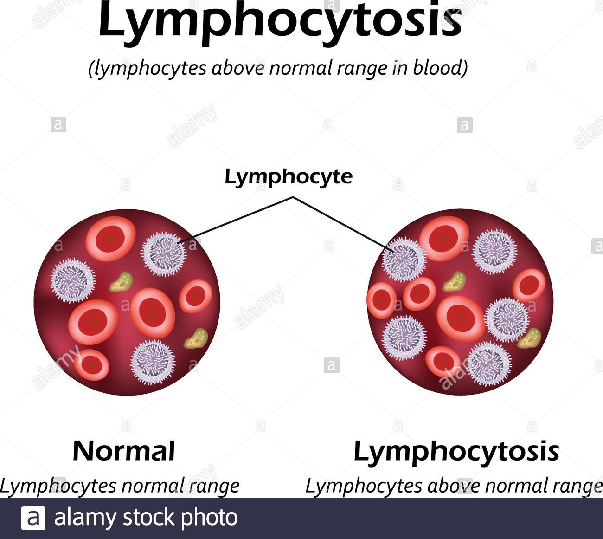

Lymphocytosis

SYMPTOMS:
- Lymphocytosis itself does not cause symptoms. However, you may experience symptoms from the underlying cause of lymphocytosis. Depending on the cause, symptoms may range from no symptoms to severe.
CAUSES:
- Lymphocytosis results from increased numbers of lymphocytes in your blood. Lymphocytes are a type of white blood cell. They play an important role in your immune system, helping your body fight off infection. Many underlying medical conditions can cause lymphocytosis.
-
High lymphocyte blood levels indicate your body is dealing with an infection or other inflammatory condition. Most often, a temporarily high lymphocyte count is a normal effect of your body’s immune system working. Sometimes, lymphocyte levels are elevated because of a serious condition, like leukemia.